Texto extraído da edição fornecida, sem atualização normativa. Consulte a página original para conferir tabelas, formulários e instruções ilustradas. A numeração dos links corresponde à página do arquivo PDF.
Apresentação
PDF · p. 1AVERBAÇÃO DE RECOLHIMENTO DE
CONTRIBUIÇÃO PARA O PLANO DE SEGURIDADE SOCIAL – PARA OS CASOS DE
LICENÇA SEM REMUNERAÇÃO
Caderno de Orientação DAP - 06.005 - AVERBAÇÃO DE RECOLHIMENTO DE CONTRIBUIÇÃO PARA O PLANO DE SEGURIDADE SOCIAL – 1ª Edição 2024
DAP-06.005
Introdução
PDF · p. 2INTRODUÇÃO
É natural que, ao assumir a função, os militares e servidores civis tenham dúvidas a respeito das
atividades que devem executar e as responsabilidades envolvidas.
Este caderno tem por finalidade esclarecer aspectos importantes para o exercício da função,
renovar conhecimentos e destacar os pontos mais relevantes.
Dessa forma, o assunto objeto deste caderno foi desenvolvido observando-se as dúvidas
recorrentes, a legislação e os normativos vigentes.
Convém destacar que este documento tem objetivo meramente informativo, não se sobrepondo
à legislação vigente e nem servindo como amparo legal para quaisquer postulações.
Diretoria de Assistência ao Pessoal
Boa leitura!
Ver página original — tabelas, imagens e diagramas
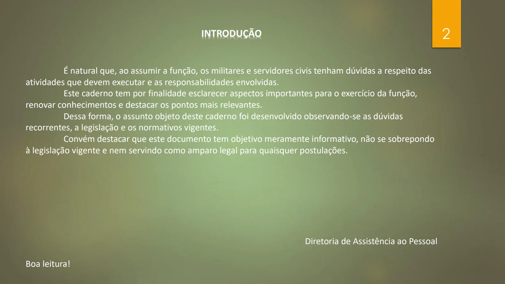
Legislação
PDF · p. 3PARTE I
LEGISLAÇÃO
Caderno de Orientação DAP - 06.005 - AVERBAÇÃO DE RECOLHIMENTO DE CONTRIBUIÇÃO PARA O PLANO DE SEGURIDADE SOCIAL – 1ª Edição 2024
Legislação
PDF · p. 4Lei nº 10.667, de 14 de maio de 2003
Lei nº 10.887, de 18 de junho de 2004
Lei nº 12.350, de 20 de dezembro de
2010
Parecer Normativo
COSIT nº 1, de 18 de abril de 2016
Emenda Constitucional
nº 103, de 13 de novembro de 2019
Instrução Normativa RFB nº
2097, de 18 de julho de 2022
Instrução Normativa PRES/INSS
nº 128, de 28 de março de 2022
Portaria MTP nº 1467, de 2 de
junho de 2022
Portaria Interministerial
MPS/MF nº 26, de 10 de janeiro
de 2023
É dever do servidor/empregado público, da Organização Militar (OM) e da Região Militar (RM) ler e
acompanhar a atualização da legislação que se refere aos assuntos tratados neste Caderno de
Orientação.
Cabe ao gestor da unidade de gestão de pessoas, acompanhar as comunicações constantes do órgão
central do SIPEC (“COMUNICA”), no SIAPE.
Caderno de Orientação DAP - 06.005 - AVERBAÇÃO DE RECOLHIMENTO DE CONTRIBUIÇÃO PARA O PLANO DE SEGURIDADE SOCIAL – 1ª Edição 2024
Ver página original — tabelas, imagens e diagramas
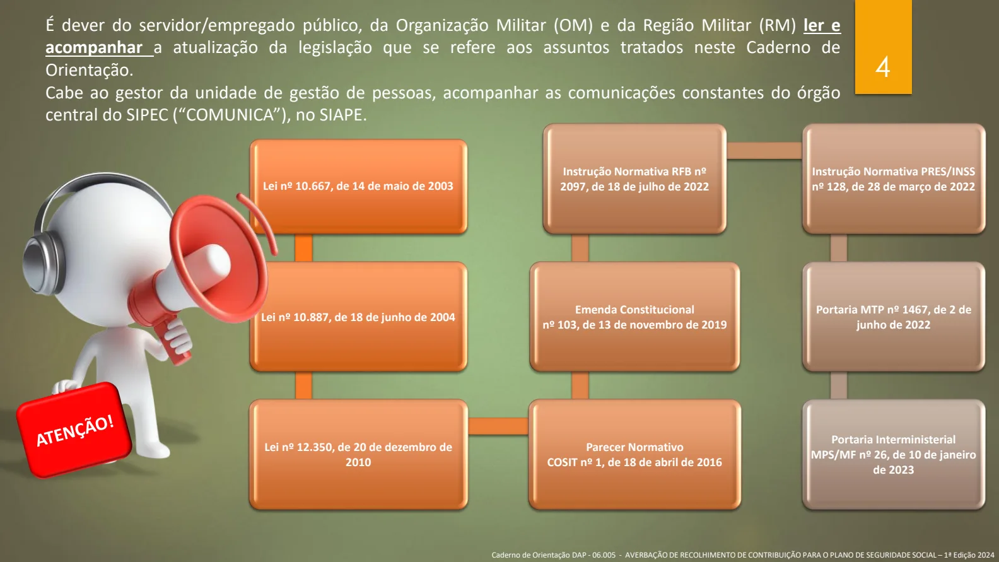
Conceitos e requisitos básicos
PDF · p. 5PARTE II
DOS CONCEITOS E
DOS REQUISITOS
BÁSICOS
Caderno de Orientação DAP - 06.005 - AVERBAÇÃO DE RECOLHIMENTO DE CONTRIBUIÇÃO PARA O PLANO DE SEGURIDADE SOCIAL – 1ª Edição 2024
Conceitos e requisitos básicos
PDF · p. 6Caderno de Orientação DAP - 06.005 - AVERBAÇÃO DE RECOLHIMENTO DE CONTRIBUIÇÃO PARA O PLANO DE SEGURIDADE SOCIAL – 1ª Edição 2024
SIAPE
Registro de
contribuição
previdenciária
Averbação de recolhimento de contribuição para o plano de
seguridade social é o ato de registrar no Sistema Integrado de
Administração de Pessoal (SIAPE) as contribuições do servidor civil
licenciado ou afastado, de forma a garantir a sua manutenção de
vínculo no Regime Próprio de Previdência Social (RPSS).
1. CONCEITO:
2. REQUISITO:
Receber, do servidor afastado, sem remuneração, o comprovante de contribuição
previdenciária.
Ver página original — tabelas, imagens e diagramas
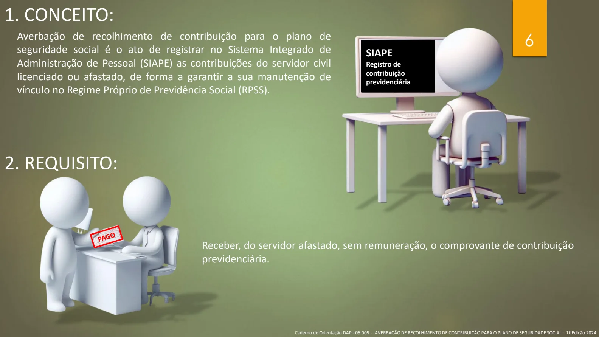
Informações gerais
PDF · p. 7PARTE III
INFORMAÇÕES
GERAIS
Caderno de Orientação DAP - 06.005 - AVERBAÇÃO DE RECOLHIMENTO DE CONTRIBUIÇÃO PARA O PLANO DE SEGURIDADE SOCIAL – 1ª Edição 2024
Ver página original — tabelas, imagens e diagramas
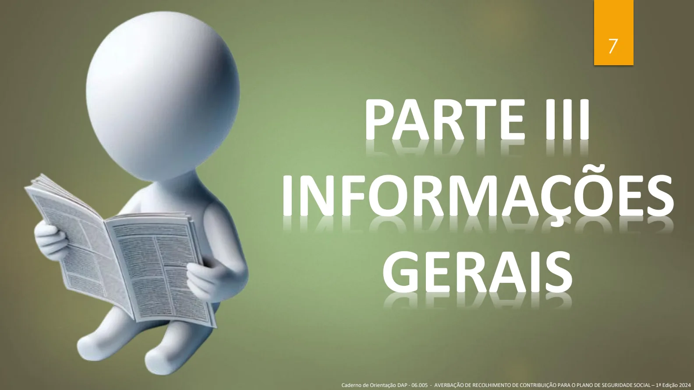
Informações gerais
PDF · p. 8EM QUE SITUAÇÃO O SERVIDOR PODE FAZER, PESSOALMENTE, A
CONTRIBUIÇÃO PREVIDENCIÁRIA?
01
Caderno de Orientação DAP - 06.005 - AVERBAÇÃO DE RECOLHIMENTO DE CONTRIBUIÇÃO PARA O PLANO DE SEGURIDADE SOCIAL – 1ª Edição 2024
para acompanhar cônjuge,
também servidor público civil ou
militar, de qualquer dos Poderes
da União, dos Estados, do Distrito
Federal ou dos Municípios, que
foi deslocado no interesse da
Administração
para tratar de interesses
particulares
por motivo de doença em pessoa da
família sem percepção de
remuneração
Será assegurada ao servidor licenciado ou afastado SEM REMUNERAÇÃO a
manutenção da vinculação ao Plano de Seguridade Social do Servidor (PSS), mediante
o recolhimento mensal da respectiva contribuição, no mesmo percentual devido
pelos servidores em atividade, nas seguintes hipóteses:
em razão de prisão
Ver página original — tabelas, imagens e diagramas
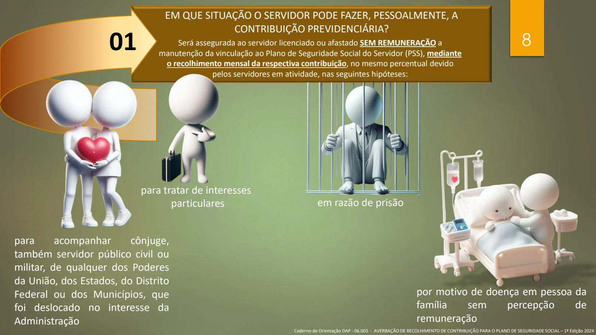
Informações gerais
PDF · p. 902
Caderno de Orientação DAP - 06.005 - AVERBAÇÃO DE RECOLHIMENTO DE CONTRIBUIÇÃO PARA O PLANO DE SEGURIDADE SOCIAL – 1ª Edição 2024
MANUTENÇÃO DA VINCULAÇÃO AO PLANO DE SEGURIDADE
SOCIAL DO SERVIDOR (PSS):
O servidor mantém sua opção pela manutenção da vinculação
ao PSS mediante o recolhimento MENSAL da respectiva
contribuição, no mesmo percentual devido pelos servidores em
atividade.
x
O pagamento deverá ser feito ATÉ o segundo dia útil POSTERIOR à data do pagamento das
remunerações dos servidores ocupantes do cargo correspondente ao do servidor afastado.
Se o servidor não efetuar o pagamento dentro do prazo acima, poderão ser recolhidos os valores
em atraso, porém, com a incidência dos acréscimos cabíveis - multa de mora e juros de mora.
O servidor deverá comprovar à OM os recolhimentos efetuados ATÉ o dia 15 do mês
subsequente ao do pagamento.
Em caso de o servidor não cumprir os prazos do recolhimento e de sua respectiva comprovação
e se o fizer somente no seu retorno à atividade, é de competência da OM proceder à averbação
do tempo de contribuição, por meio dos registros no SIAPE e elaboração da Certidão de
Consolidação do Tempo de Contribuição - CCTC.
Ver página original — tabelas, imagens e diagramas
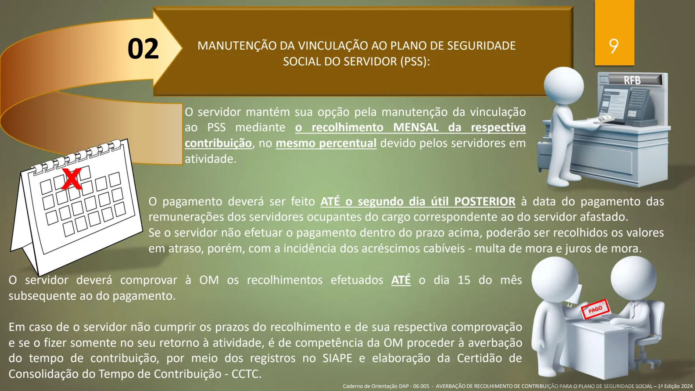
Informações gerais
PDF · p. 10Caderno de Orientação DAP - 06.005 - AVERBAÇÃO DE RECOLHIMENTO DE CONTRIBUIÇÃO PARA O PLANO DE SEGURIDADE SOCIAL – 1ª Edição 2024
SIAPE
Registro de
contribuição
previdenciária
A OM deverá instruir um processo eletrônico no Assentamento Funcional
Digital (AFD) do SIPEC para os Casos de Servidores em Licença Sem
Remuneração – 1ª Edição 2024, Parte V – Passo a Passo, Parte 3.
No retorno do servidor à atividade, a OM DEVERÁ elaborar a Declaração de Tempo de Contribuição por
Opção - Referente às Licenças sem Remuneração (Anexo A deste caderno).
A OM deverá fazer o acompanhamento do processo MENSALMENTE, até o retorno do servidor
afastado.
A OM, sempre que receber o comprovante de pagamento do servidor licenciado, deverá seguir
os passos para o pagamento da contribuição patronal, nos moldes do Caderno de Orientação
DAP - 06.024 - Procedimentos para o Recolhimento de Contribuição Previdenciária Patronal –
Para os Casos de Servidores em Licença Sem Remuneração – 1ª Edição 2024.
Ao receber o processo com a comprovação da contribuição patronal, a OM deve,
MENSALMENTE, proceder aos registros das contribuições no Sistema Integrado de
Administração de Pessoal (SIAPE), no comando CAATCONPSS.
Ver página original — tabelas, imagens e diagramas
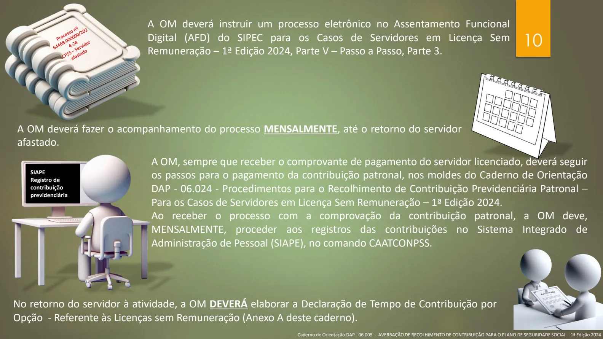
Informações gerais
PDF · p. 11Caderno de Orientação DAP - 06.005 - AVERBAÇÃO DE RECOLHIMENTO DE CONTRIBUIÇÃO PARA O PLANO DE SEGURIDADE SOCIAL – 1ª Edição 2024
O período de contribuição do servidor afastado que mantiver sua contribuição
previdenciária será computado para a concessão de aposentadoria pelo RPPS ou
para a contagem recíproca prevista nos §§ 9º e 9º-A do art. 201 da Constituição
Federal e não será considerado para verificação do cumprimento dos requisitos
de tempo de efetivo exercício no serviço público, de tempo na carreira.
Será suspensa a contagem do tempo de contribuição para efeitos de
concessão de benefícios previdenciários do segurado que não efetivar o
recolhimento das contribuições ao RPPS e não será devida, no período, a
cobertura dos riscos previdenciários não programáveis de aposentadoria
por incapacidade permanente para o trabalho, aposentadoria por invalidez
e pensão por morte.
X
Ver página original — tabelas, imagens e diagramas
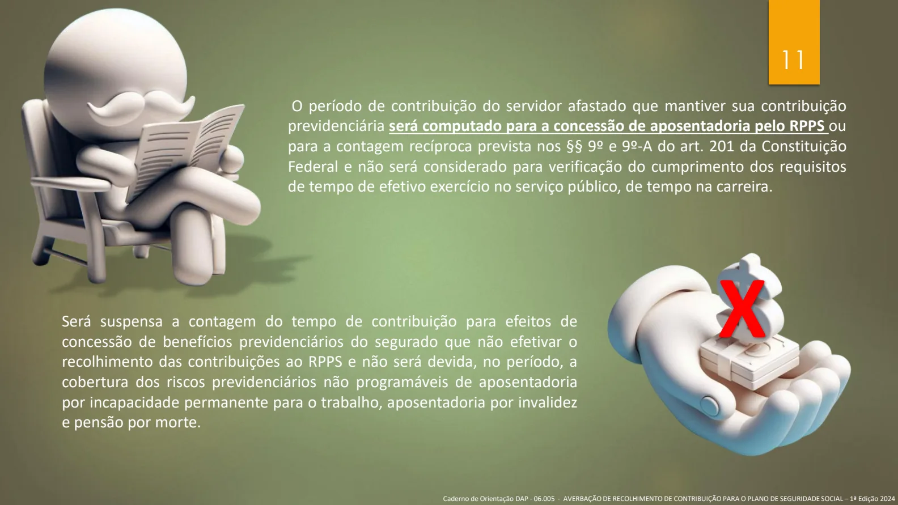
Como realizar a contribuição
PDF · p. 1203
Caderno de Orientação DAP - 06.005 - AVERBAÇÃO DE RECOLHIMENTO DE CONTRIBUIÇÃO PARA O PLANO DE SEGURIDADE SOCIAL – 1ª Edição 2024
COMO REALIZAR A CONTRIBUIÇÃO PARA O PLANO DE SEGURIDADE
SOCIAL DO SERVIDOR (CPSSS)?
O recolhimento da CPSSS deverá ser
feito, exclusivamente, por meio da
emissão do Documento de Arrecadação
de Receitas Federais - DARF - simples,
conforme modelo do item 4 – “COMO
EMITIR O DARF?”
A CPSSS incide sobre o subsídio ou vencimento de cargo
vitalício ou efetivo, acrescido das vantagens pecuniárias
permanentes estabelecidas em lei e dos adicionais de
caráter individual e sobre os proventos de aposentadorias e
pensões, inclusive sobre a gratificação natalina.
Ver página original — tabelas, imagens e diagramas
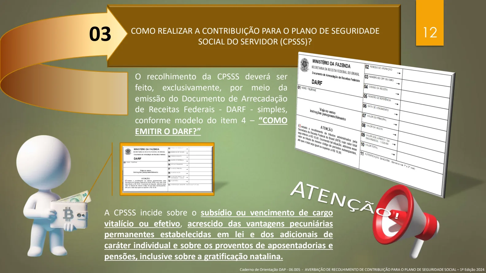
Como emitir o DARF
PDF · p. 1304
Caderno de Orientação DAP - 06.005 - AVERBAÇÃO DE RECOLHIMENTO DE CONTRIBUIÇÃO PARA O PLANO DE SEGURIDADE SOCIAL – 1ª Edição 2024
a) Acessar o Programa para Cálculo e Emissão de DARF, no site da
Receita Federal, no link:
https://sicalc.receita.economia.gov.br/sicalc/principal
b) Clicar no link “Preenchimento Rápido”:
COMO EMITIR O
DARF?
Ver página original — tabelas, imagens e diagramas
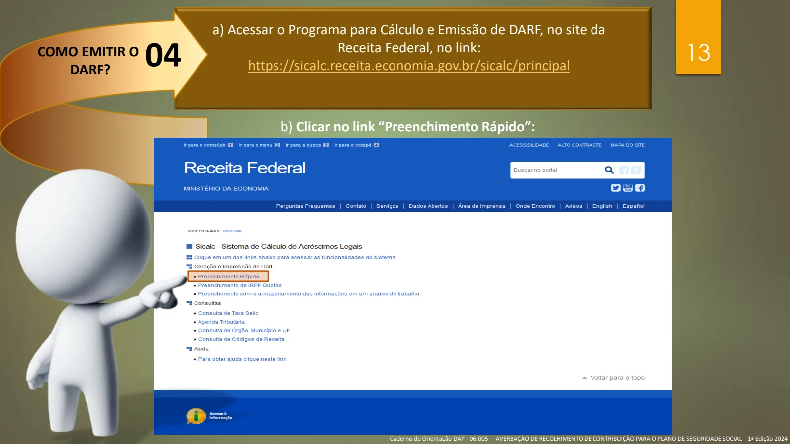
Como emitir o DARF
PDF · p. 1414
Caderno de Orientação DAP - 06.005 - AVERBAÇÃO DE RECOLHIMENTO DE CONTRIBUIÇÃO PARA O PLANO DE SEGURIDADE SOCIAL – 1ª Edição 2024
COMO EMITIR O DARF? (Cont.)
d) Autenticar o captcha
e) Clicar em continuar:Continuar
c) Inserir seu CPF e DATA DE NASCIMENTO:
Mantenha esta opção selecionada
Ver página original — tabelas, imagens e diagramas
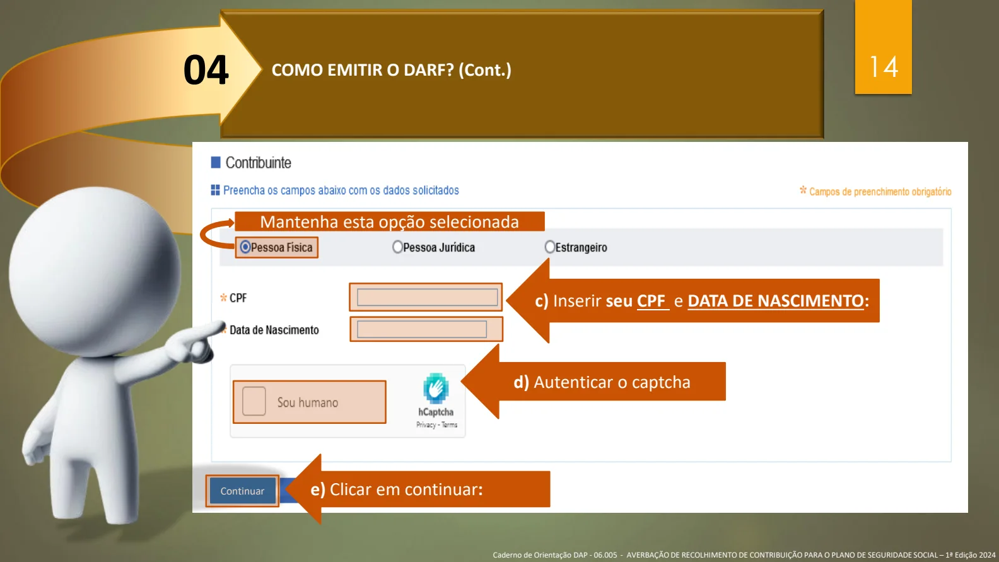
Como emitir o DARF
PDF · p. 1504 15
Caderno de Orientação DAP - 06.005 - AVERBAÇÃO DE RECOLHIMENTO DE CONTRIBUIÇÃO PARA O PLANO DE SEGURIDADE SOCIAL – 1ª Edição 2024
COMO EMITIR O DARF? (Cotn.)
f) Continuar o preenchimento: inserir o domicílio e o código da receita:
Utilizar SEMPRE
este código!
Ao inserir este
código, o sistema
abrirá uma
continuação da
página, conforme
retratado na próxima
tela.
ESCOLHER SEU DOMICÍLIO ATUAL (CONFORME OPÇÕES OFERECIDAS PELO SISTEMA)
OPCIONAL – PODE SER UTILIZADO PARA FINS DE CONTROLE PESSOAL (EX.: MÊS E ANO DE COMPETÊNCIA)
Ver página original — tabelas, imagens e diagramas
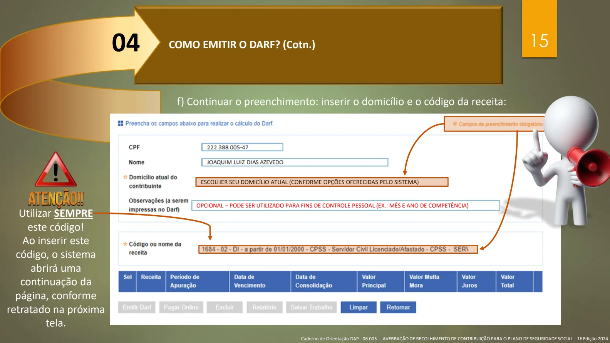
Como emitir o DARF
PDF · p. 1604 16
Caderno de Orientação DAP - 06.005 - AVERBAÇÃO DE RECOLHIMENTO DE CONTRIBUIÇÃO PARA O PLANO DE SEGURIDADE SOCIAL – 1ª Edição 2024
g) Após a inserção do código da receita (tela da página anterior),
informar a data de consolidação, o período de apuração¹ e o valor do
principal. Ao final, clique em “CALCULAR” para gerar a guia:
¹ Intervalo de tempo no qual ocorreram os fatos geradores. O período informado deve ser igual ou posterior a 01/01/1995 e não pode
ser posterior ao último dia útil do ano corrente.
Data do preenchimento do DARF
A data de
vencimento é
gerada
automaticamente
R$ XX, XX (O valor deverá ser o correspondente ao da previdência descontada da remuneração do último
mês de um servidor ativo)
COMO EMITIR
O DARF? (Cotn.)
A CPSSS incide sobre o subsídio ou vencimento
de cargo vitalício ou efetivo, acrescido das
vantagens pecuniárias permanentes
estabelecidas em lei e dos adicionais de
caráter individual e sobre os proventos de
aposentadorias e pensões, inclusive sobre a
gratificação natalina.
Ver página original — tabelas, imagens e diagramas
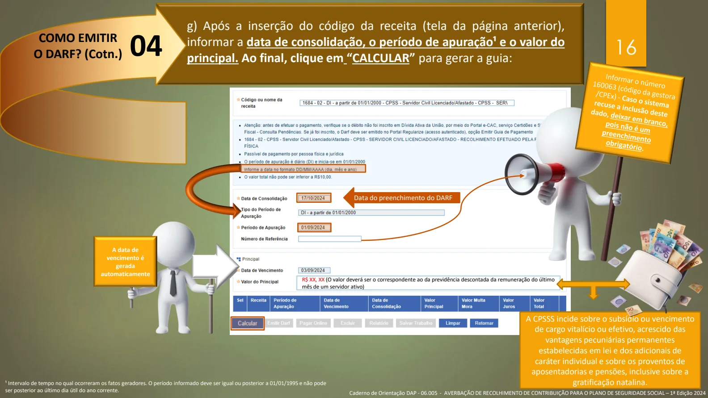
Documentos necessários
PDF · p. 17PARTE IV
DOS DOCUMENTOS
NECESSÁRIOS
Caderno de Orientação DAP - 06.005 - AVERBAÇÃO DE RECOLHIMENTO DE CONTRIBUIÇÃO PARA O PLANO DE SEGURIDADE SOCIAL – 1ª Edição 2024
Ver página original — tabelas, imagens e diagramas
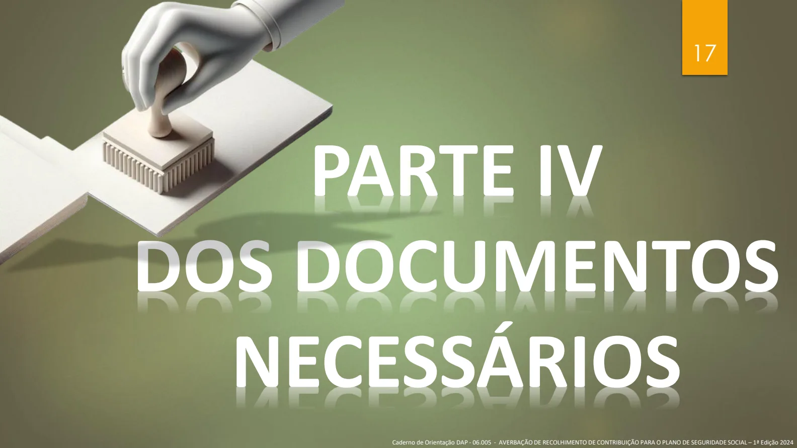
Documentos necessários
PDF · p. 18DOCUMENTO RESPONSÁVEL PELA
EMISSÃO/ENVIO/ELABORAÇÃO OBSERVAÇÃO
Termo de Opção e Ciência para Licenças sem
Remuneração - Recolhimento De Contribuição
Previdenciária
INTERESSADO/OM
Anexo foi preenchido e assinado pelo servidor no ato de requerimento da
licença (CONFORME Anexo D2 do Caderno de Orientação nº DAP-06.007 -
LICENÇAS E CONVERSÃO DE LPA EM PECÚNIA)
A OM deve inserir a cópia deste documento no processo eletrônico.
Comprovante de pagamento do DARF
servidor deve fazer o pagamento com
emissão da DARF, nos moldes da Parte III,
item 4 deste Caderno)
INTERESSADO
O pagamento deve ser realizado ATÉ o segundo dia útil POSTERIOR à data
do pagamento das remunerações dos servidores ocupantes do cargo
correspondente ao do servidor afastado. E o comprovante deve ser
entregue na OM pelo servidor ATÉ o dia 15 do mês subsequente ao do
pagamento (conforme disposto na Instrução Normativa RFB nº 2097, de 18
de julho de 2022).
DIEx Simplificado, com destino ao Órgão
Pagador ou Ordenador de Despesa(OP ou
OD/OM), com vistas à realização do cálculo
para pagamento da contribuição patronal.
OM
Documento mensal, elaborado sempre que for recebido o comprovante de
pagamento.
Neste documento, o comprovante de pagamento da contribuição
previdenciária do servidor deve ser inserido como anexo.
Abertura do Processo eletrônico OM
O processo será autuado com a inserção do DIEx Simplificado criado para
enviar o comprovante ao OP/OD.
Será instruído nos moldes do Caderno de Orientação DAP - 06.024 -
Procedimentos para o Recolhimento de Contribuição Previdenciária
Patronal - Para os Casos de Servidores em Licença Sem Remuneração -
Módulo Operador - 1ª Edição 2024, Parte V - Passo a Passo.
Tabela 7: Documentos do processo de contribuição previdenciária do servidor afastado, sem remuneração:
Caderno de Orientação DAP - 06.005 - AVERBAÇÃO DE RECOLHIMENTO DE CONTRIBUIÇÃO PARA O PLANO DE SEGURIDADE SOCIAL – 1ª Edição 2024
1. DURANTE O AFASTAMENTO DO SERVIDOR:
Ver página original — tabelas, imagens e diagramas
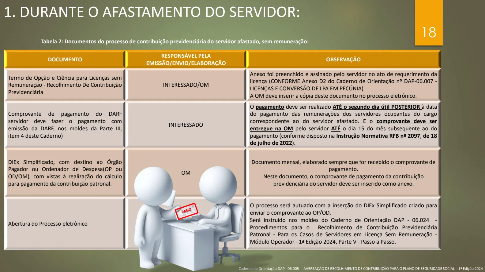
Documentos necessários
PDF · p. 19DOCUMENTO RESPONSÁVEL PELA
EMISSÃO/ENVIO/ELABORAÇÃO OBSERVAÇÃO
Cálculo de pagamento da parte
patronal OP ou OD/OM
Este documento deve ser inserido no processo
eletrônico encaminhado para o CPEx, para fins de
pagamento da parte patronal.
Comprovante de pagamento da
contribuição patronal CPEx
Inserido no processo eletrônico mensalmente.
A cada pagamento, o processo eletrônico deve ser
restituído para a OM.
Tabela 7: Documentos do processo de contribuição previdenciária do servidor afastado, sem remuneração (continuação):
Caderno de Orientação DAP - 06.005 - AVERBAÇÃO DE RECOLHIMENTO DE CONTRIBUIÇÃO PARA O PLANO DE SEGURIDADE SOCIAL – 1ª Edição 2024
1. DURANTE O AFASTAMENTO DO SERVIDOR:
Ver página original — tabelas, imagens e diagramas
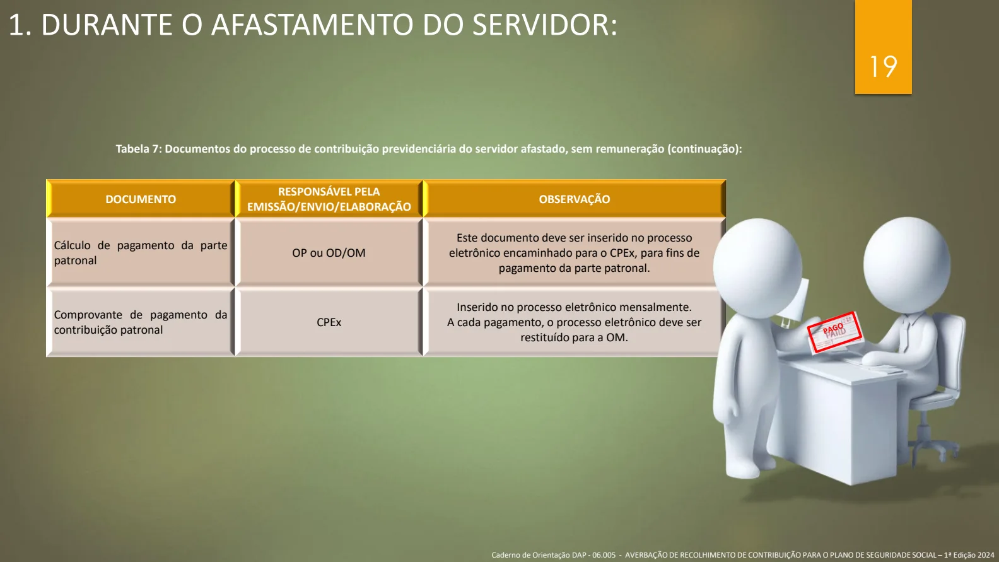
Documentos necessários
PDF · p. 20DOCUMENTO RESPONSÁVEL PELA
EMISSÃO/ENVIO/ELABORAÇÃO OBSERVAÇÃO
Requerimento de emissão da Declaração de
Tempo de Contribuição por Opção Referente
às Licenças sem Remuneração (Anexo A)
INTERESSADO
Solicitar à OM vinculante o envio, para a sua conta do SPED 3.0, do processo
eletrônico utilizado para o pagamento de suas contribuições patronais. Ao
recebe-lo você deve:
a) receber o processo (“PROCESSOS A RECEBER”), no módulo Processos;
b) Elaborar o requerimento conforme disposto no item 3 da Parte IV deste
Caderno; E
c) Restituir o processo eletrônico para a OM vinculante.
Informação OM
Elaborar este documento no SPED 3.0, conforme disposto no item 3 da Parte IV
deste Caderno. (este documento deverá ser inserido no mesmo processo
eletrônico utilizado para o pagamento das contribuições patronais do servidor
solicitante)
Declaração de Tempo de Contribuição por
Opção Referente às Licenças sem
Remuneração (Anexo A)
OM
Anexo A
Elaborado com base nos seguintes registros:
a) dados processuais de pagamento das contribuições comprovadas pelo
servidor e das contribuições patronais realizadas pelo C Ex; e/ou
b) dados inseridos mensalmente, no SIAPE, pela OM, após as conferências de
pagamentos das contribuições individuais e patronais.
(após a emissão deste documento, anexar uma cópia no processo eletrônico
das contribuições e no Assentamento Funcional Digital do servidor para uso
futuro na obtenção de aposentadoria ou abono de permanência)
Portaria de Averbação DAP
Elaborada em momento futuro, no ato de requerimento de aposentadoria ou
abono de permanência, pelo servidor. A DAP utilizará a Declaração de Tempo
de Contribuição elaborada pela OM, que foi inserida no AFD no retorno do
servidor licenciado.
Com publicação no Adt Téc “A” ao BOL DGP
Tabela 8: Documentos do processo de contribuição previdenciária do servidor afastado, sem remuneração - conclusão:
Caderno de Orientação DAP - 06.005 - AVERBAÇÃO DE RECOLHIMENTO DE CONTRIBUIÇÃO PARA O PLANO DE SEGURIDADE SOCIAL – 1ª Edição 2024
2. APÓS O RETORNO DO SERVIDOR:
Ver página original — tabelas, imagens e diagramas
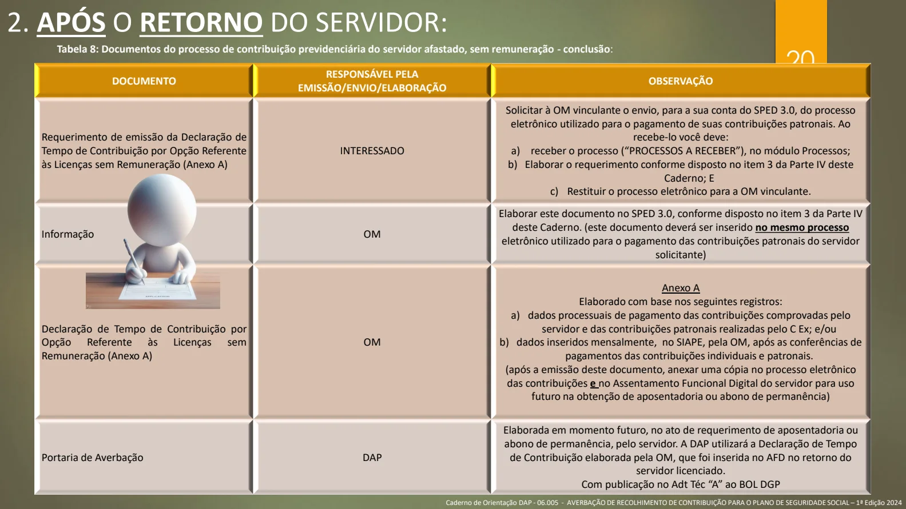
Documentos no SPED
PDF · p. 213. REDIGINDO OS DOCUMENTOS NO SPED (Requerimento e Informação):
1
2
4
5
Requerimento Informação
3
6
Caderno de Orientação DAP - 06.005 - AVERBAÇÃO DE RECOLHIMENTO DE CONTRIBUIÇÃO PARA O PLANO DE SEGURIDADE SOCIAL – 1ª Edição 2024
Ver página original — tabelas, imagens e diagramas
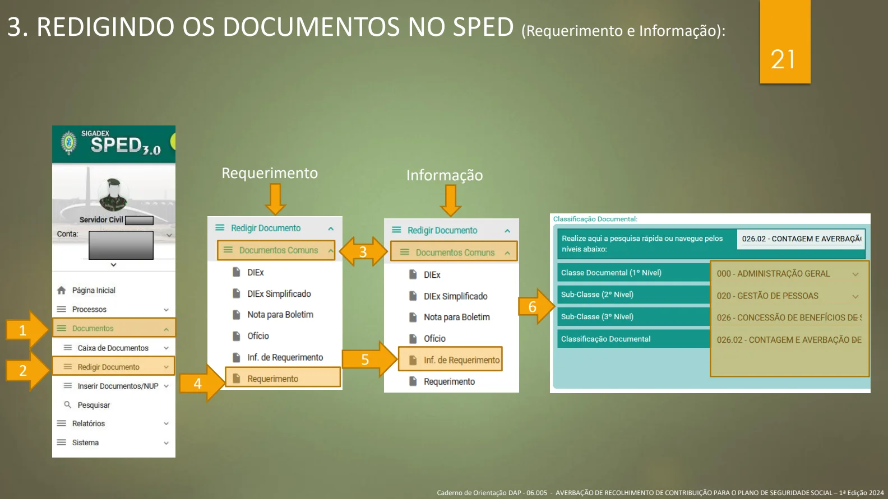
Tramitação interna
PDF · p. 22PARTE V
DA
TRAMITAÇÃO
INTERNA
Caderno de Orientação DAP - 06.005 - AVERBAÇÃO DE RECOLHIMENTO DE CONTRIBUIÇÃO PARA O PLANO DE SEGURIDADE SOCIAL – 1ª Edição 2024
A OM deverá instruir um processo eletrônico nos Caderno de
Orientação DAP - 06.024 - Procedimentos para o
Recolhimento de Contribuição Previdenciária Patronal - Para os
Casos de Servidores em Licença Sem Remuneração - Módulo
Operador - 1ª Edição 2024, Parte V - Passo a Passo.
Ver página original — tabelas, imagens e diagramas
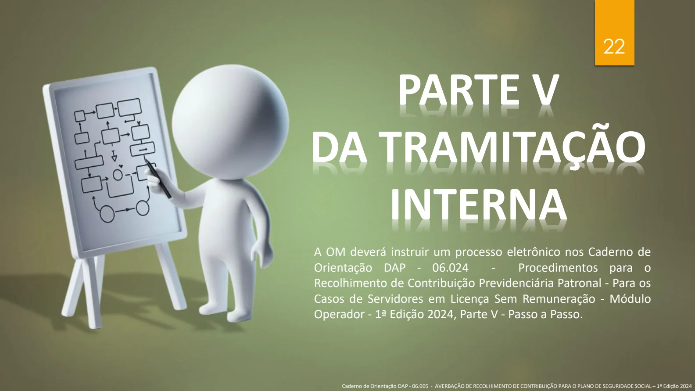
Fontes e elaboração
PDF · p. 23ELABORAÇÃO:
ASSESSORIA TÉCNICA DA SPC/DAP
DEZEMBRO DE 2024
Para conhecer melhor o assunto, leia as
legislações indicadas no início deste caderno, disponíveis no link:
https://legis.sigepe.gov.br/legis/pesquisa-avancada
Caderno de Orientação DAP - 06.005 - AVERBAÇÃO DE RECOLHIMENTO DE CONTRIBUIÇÃO PARA O PLANO DE SEGURIDADE SOCIAL – 1ª Edição 2024
Ver página original — tabelas, imagens e diagramas
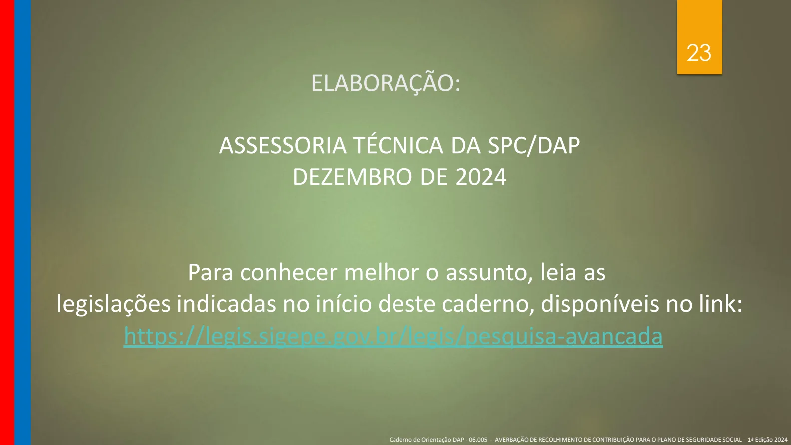